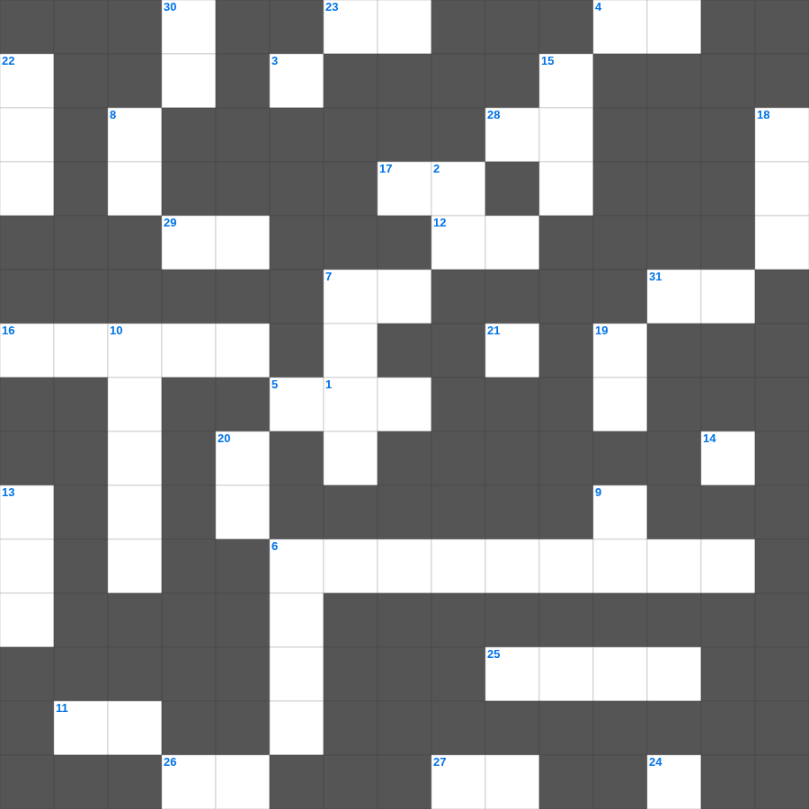

말라기 마스터 50
📌 서비스 정의
십자가로세로는 교회 주보와 주일학교에서 사용할 수 있는 성경 기반 가로세로 퍼즐 서비스입니다. 성경 인물, 사건, 핵심 구절을 바탕으로 제작되었습니다. 온라인 풀이 및 인쇄 기능을 제공합니다.
📖 말라기란?
말라기는 구약의 마지막 예언서로, 형식적인 신앙과 불성실한 헌신을 질타하며 메시아의 길을 예비할 엘리야 같은 선지자가 올 것을 예언합니다.
📚 말라기의 주요 사건·주제
하나님의 사랑에 대한 의심 제기 · 제사장들의 부패 질타 · 십일조에 대한 권고 · 여호와의 날에 대한 경고 · 엘리야의 도래 예언
말라기를 주제로 한 말라기 낱말 퍼즐입니다. 35개의 단어를 맞춰보세요! 가로세로 낱말 퍼즐 형식으로 말라기의 핵심 내용을 재미있게 복습할 수 있습니다.

📝 가로 힌트
1. 빌라도가 유대인들에게 예수를 가리켜 한 말: 보라 이 이것이로다 (Ecce Homo)
3. 이제는 전에 멀리 있던 너희가 그리스도 예수 안에서 그리스도의 이것으로 가까워졌느니라
4. 여호와여 주께서 내 심령의 원통함을 풀어 주셨고 내 이것을 속량하셨나이다
5. 그의 성령으로 말미암아 너희 이것을 능력으로 강건하게 하시오며
6. 스바냐의 이름 뜻
7. 에스겔이 예언한 새 성전의 법도 핵심은 '이것'이다
11. 너희가 내게 부르짖으며 내게 와서 기도하면 내가 너희들의 기도를 이것 것이요
12. 너희는 위로부터 이것으로 입혀질 때까지 이 성에 머물라
16. 예수를 판 가롯 유다가 예수께 와서 입을 맞추며 말한 인사말
17. 너희는 산에 올라가서 나무를 가져다가 이것을 건축하라 그리하면 내가 그것으로 말미암아 기뻐하고
21. 우리가 살아도 주를 위하여 살고 죽어도 주를 위하여 죽나니 그러므로 사나 죽으나 우리가 이것의 것이로다
23. 끝으로 너희가 주 안에서와 그 힘의 능력으로 이것하여지고
24. 요셉이 형들을 용서하며 한 말 '하나님이 이것을 선으로 바꾸사'
25. 스바냐 2장에서 하나님을 찾아야 할 자들
26. 상전들아 너희도 그들에게 이와 같이 하고 이것을 그치라 이는 그들과 너희의 상전이 하늘에 계시고
27. 성전을 떠나지 않고 금식하며 기도하던 여선지자
28. 이러므로 인자는 이것일에도 주인이니라
29. 독이 든 국에 엘리사가 이것을 던져 해독함
31. 술 취하지 말라 이는 방탕한 것이니 오직 이것으로 충만함을 받으라
📝 세로 힌트
1. 누구든지 삼십 일 동안에 왕 외의 어떤 신에게나 사람에게 무엇을 구하면 이것 굴에 던져 넣기로 한 것이니이다
2. 계시록 1장 8절: 이제도 있고 전에도 있었고 장차 올 자요 이것한 자라
3. 이스라엘 백성이 결단코 먹어서는 안 되는 것(생명)
6. 예레미야의 예언을 듣고 두루마리를 불태운 왕
7. 군대 귀신 들린 자가 거하던 곳 (무덤 사이)
8. 내 사랑하는 자가 문틈으로 손을 들이밀매 내 이것이 동하여서
9. 육체의 일: 음행, 더러운 것, 호색, 우상 숭배, 주술, 원수 맺는 것, 분쟁, 이것...
10. 제물을 태우는 불은 하늘에서 내려온 이것임
13. 내가 모든 성도 중에 지극히 작은 자보다 더 작은 나에게 이 은혜를 주신 것은 측량할 수 없는 그리스도의 이것을 이방인에게 전하게 하시고
14. 책망을 받는 모든 것은 이것으로 말미암아 드러나나니 드러나는 것마다 이것이니라
15. 제4계명 '이날을 기억하여 거룩하게 지키라'
18. 한 나병환자를 고치신 후 아무에게도 말하지 말고 가서 이것에게 네 몸을 보이라 하심
19. 가나안 정복은 하나님의 이것을 성취한 사건임
20. 하나님의 모든 이것하신 것으로 너희에게 충만하게 하시기를 구하노라
22. 하나님이 십일조를 통해 열어주시겠다고 약속하신 곳
30. 여호수아의 고별 설교가 행해진 곳
🧩 이 퍼즐에서 배우는 내용
이 퍼즐은 말라기 마스터 50의 핵심 단어와 개념을 자연스럽게 복습할 수 있도록 구성되었습니다. 주일학교 수업이나 개인 성경공부에서 학습 내용을 점검하는 용도로 바로 활용할 수 있습니다.
🧑🏫 교회 교육 자료 활용
이 퍼즐은 주일학교 교재 추천 자료로 활용할 수 있고, 주일학교 주보에 넣기 좋은 분량으로 구성되어 있습니다. 수업용 주일학교 교안에 활동지로 붙이거나, 예배 후 복습용 주일학교 공과교재로 바로 사용할 수 있습니다.
🏷️ 키워드
말라기 낱말 퍼즐, 말라기, 십자가로세로, 성경퀴즈, 말씀퀴즈, 가로세로퍼즐, 주일학교 교재 추천, 주일학교 주보, 주일학교 교안, 주일학교 공과교재